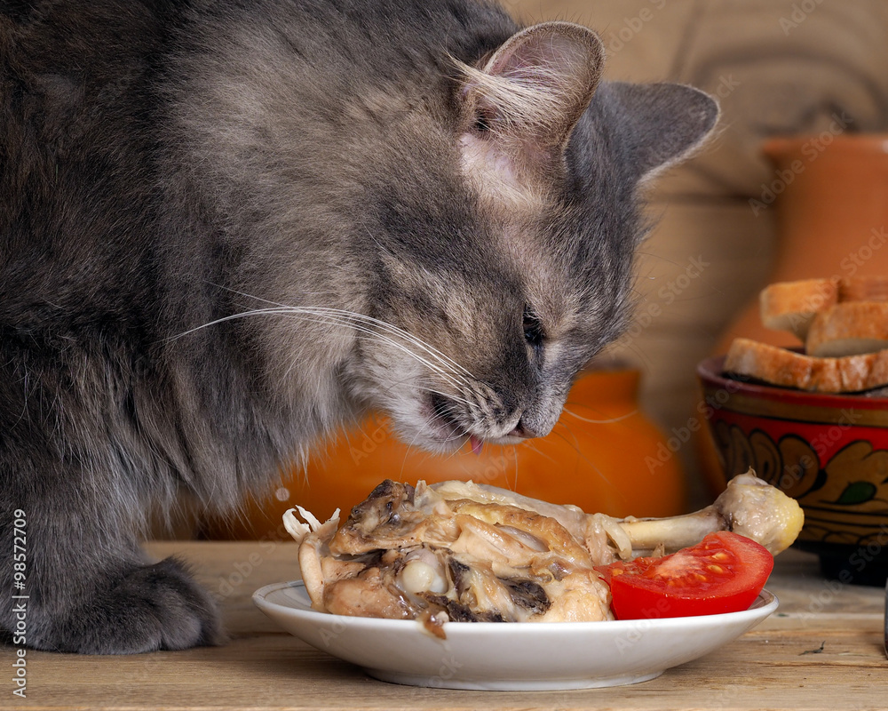

Уход за кошками
Питание
Кошки — облигатные хищники. Их рацион должен содержать:
- Высококачественный белок (мясо, рыба)
- Таурин (важен для зрения)
- Вода в достаточном количестве
Гигиена
Уход за шерстью
Короткошерстных кошек вычесывают 1-2 раза в неделю, длинношерстных — ежедневно.
Стрижка когтей
Используйте специальные когтерезки. Не повреждайте "живую" часть когтя.
Здоровье
Обязательные процедуры:
- Ежегодная вакцинация
- Регулярная дегельминтизация
- Профилактика блох и клещей
- Стерилизация/кастрация (если не планируете разведение)